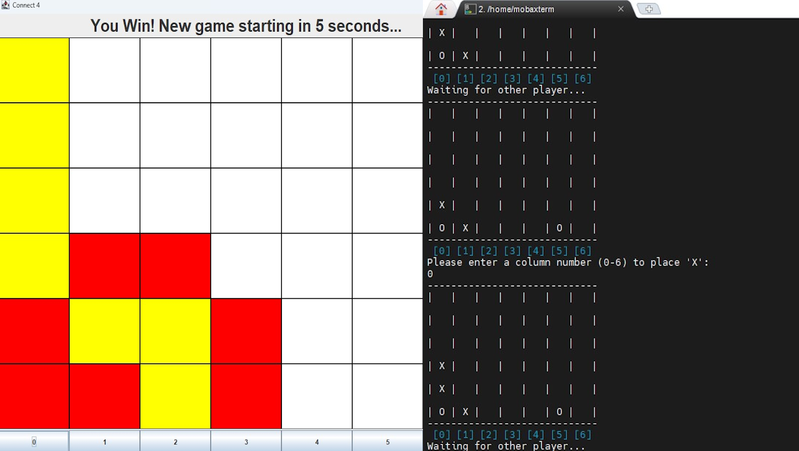

Network Socket Based
Terminal & GUI Connect 4

Terminal & GUI Connect 4
Status: Marked Assignment
Tools Used: Java Threading, Java Swing
This is a network socket programming connect 4 assignment. It was entirely written in Java. The project contains server code that allows for terminal client connections aswell code for a GUI client which accepts the servers terminal-friendly output and parses it to the GUI. Terminal clients can be paired up with GUI clients and the threading allows more multiple instances of concurrent games.
Note: This project is marked as "Marked Assignment". This means the project was done as part of a marked computer science assignment rather than a personal passion project.
All code was publicly published after submission date.
All code was publicly published after submission date.